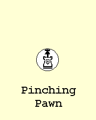

Ultima (also called Baroque)This game first appeared in an article I wrote for the August 1962 issue of Recreational Mathematics Magazine. The article was titled “? ? ?” because, at the time, the game did not yet have a name. Readers were asked to suggest names, and the Editor offered a year’s subscription to whoever made the best suggestion. Lately, there has been some interest in preserving the history of this game; so I found my old copy of that issue, scanned the relevent pages, and copied them to this page. After the issue had appeared, I received a letter which suggested the name Baroque. I thought that was a great name, and we declared it the winner. In 1963, the game appeared in the hardcover edition of my book Abbott’s New Card Games (even though it’s a board game, not a card game). In my manuscript I called the game Baroque, but my publisher didn’t like that name and came up with Ultima instead. A lot of people think that publishers shouldn’t make these sorts of changes to an author’s work, but from what I’ve observed, the publisher is usually right and the author is usually wrong. After I privately-published my game Epaminondas, I wished I’d had a publisher who might have told me what a dumb idea that name was. After my card game book was published, I began seeing problems with Ultima and tried to fix one of them by making a change in the rules. These revised rules appeared in the 1968 paperback edition of the book. The change turned out to be a pretty bad idea, and everyone uses the 1963 rules instead.
|
|
For the best explanation of the rules (the 1963 version) see this page of the web site ChessVariants.org. Not only is their explanation well-written, but if you click on “Animated Illustration” you’ll see a series of moving diagrams that help explain the pieces (a sample is at the right). These are animated GIFs created by David Howe. They are a fantastic innovation for presenting game rules and could be used in other forms of technical writing. The Chess Variants site also has an interview with me. Just in case you think there aren’t already enough descriptions of this game, I should point out that Wikipedia has a long entry titled Baroque chess. In addition to providing another description of Baroque, it also presents some Baroque Variants. Back around 1964, I created a series of 12 Ultima puzzles. They were never published anywhere and I pretty much forgot about them, but recently one of my correspondents from the 60s, Lee H. Skinner, reminded me of them. I was able to put updated versions of the puzzles on this site, starting here. Both Lee and I consider the Ultima puzzles to be better than Ultima. In 1988 I wrote an article about Ultima for Michael Keller’s magazine, World Game Review. I copied that entire article to this page of my site. It gives a good history of the game and it also explains the problems I saw in the game. After the article is a further discussion of ways the game could be improved. |
 | |
|
|